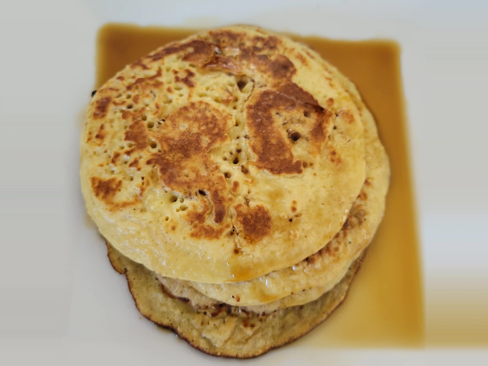

Pancake

Here is a simple Pancake recipe
Ingredients
- 200g wheat flour
- 200 ml milk
- 2 Eggs
- 2 teaspoon sugar
- 1 teaspoon baking soda
- a little bit of salt
Directions
- combine all ingredients all in a bowl and stir
- preheat a pan and add some oil
- Pour or scoop the batter onto the pan
- Brown on both sides
Contribution
BeFe
Recipe tags: quick, breakfast, sweet, pancake, cheesefare